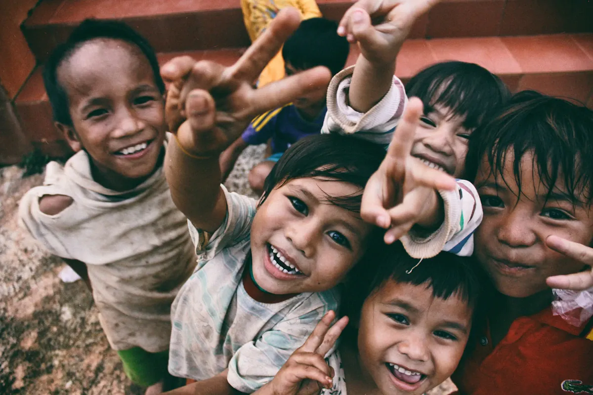
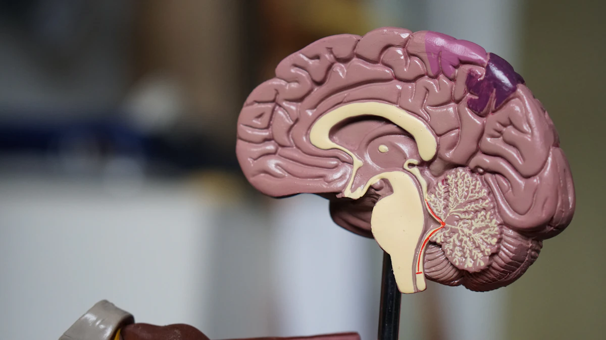
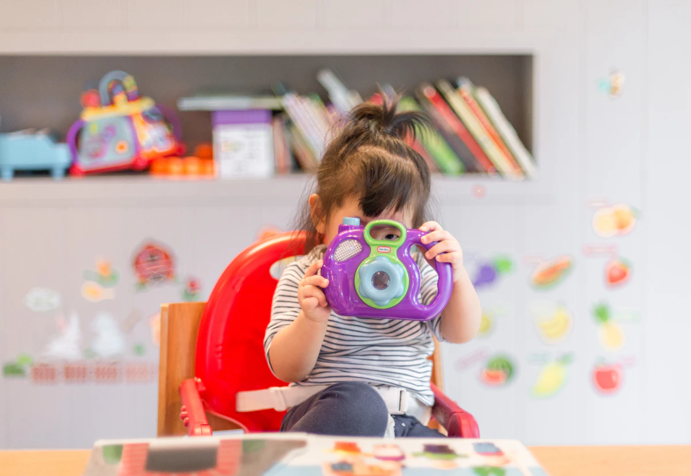
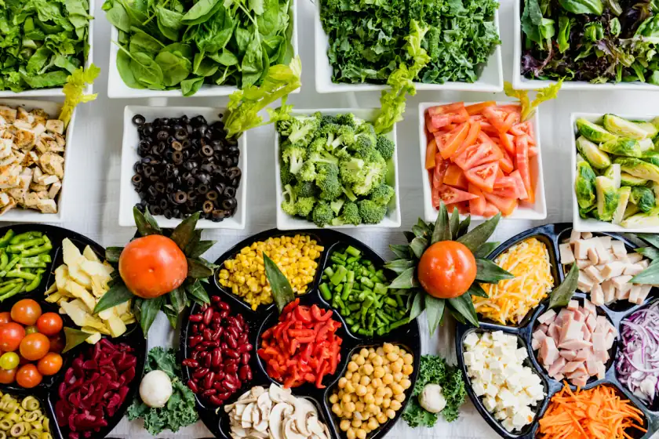

200+ active programs across education, healthcare, food security, environment, and child welfare — transforming lives in 80+ countries.

Food Relief Active
Child Welfare Active
Education Open
Food Relief ActiveEach pillar of our work is backed by data, on-ground research, and a passionate team of changemakers.
Four simple steps — your generosity reaches a community in need within 48 hours.
Browse our active programs and pick the cause closest to your heart — or donate to the General Fund.
Choose from preset amounts or enter a custom donation. Every rupee, big or small, creates real change.
Pay via UPI, Net Banking, Credit/Debit Card or NEFT. Bank-grade SSL encryption protects every transaction.
Receive real-time updates, impact reports, and a tax receipt (80G certificate) within 7 working days.
Every program we run is guided by these six non-negotiable principles of impact, integrity, and dignity.
At least 85% of every donation goes directly to field operations. Our overhead is the lowest in the industry — published every quarter.
We never exploit or sensationalize the stories of people we serve. Every individual's identity and dignity is protected and respected.
Zero tolerance for any harm to children. All volunteers undergo background checks and training before any child interaction.
Every donor receives a quarterly impact report showing exactly how their funds were used and lives changed.
All our financial statements, auditor reports, and program outcome data are publicly available on our website at all times.
Dedicated donor relations team available Mon–Sat. Every query answered within 24 hours. Your trust is our foundation.
Complete transparency in how every rupee is distributed across our programs.
Only 15% is used for operational, administrative, and fundraising costs — one of the lowest ratios among Indian NGOs. Our financials are fully audited and publicly available.
Join 12,000+ donors and 5,000+ volunteers already transforming lives through HopeRise Foundation. Every rupee, every hour — it all counts.